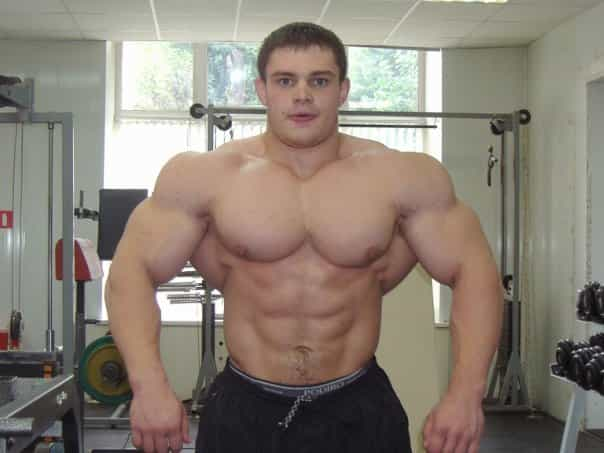
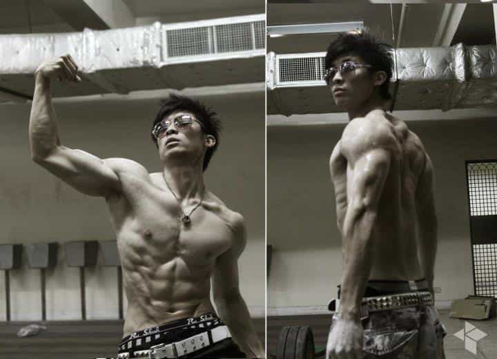
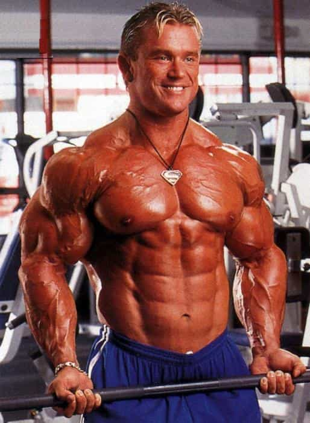
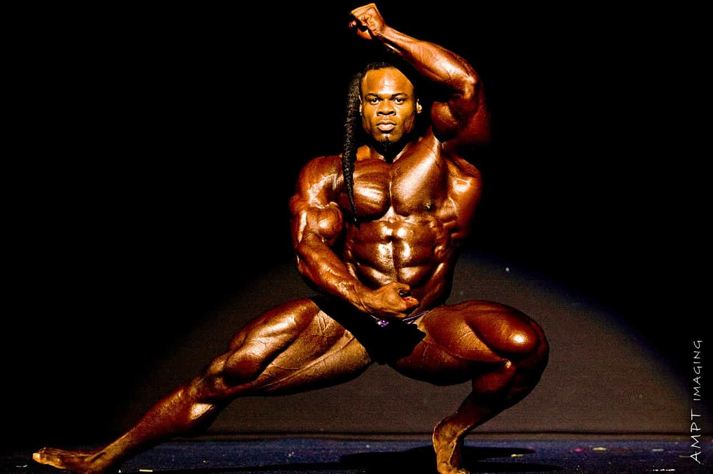
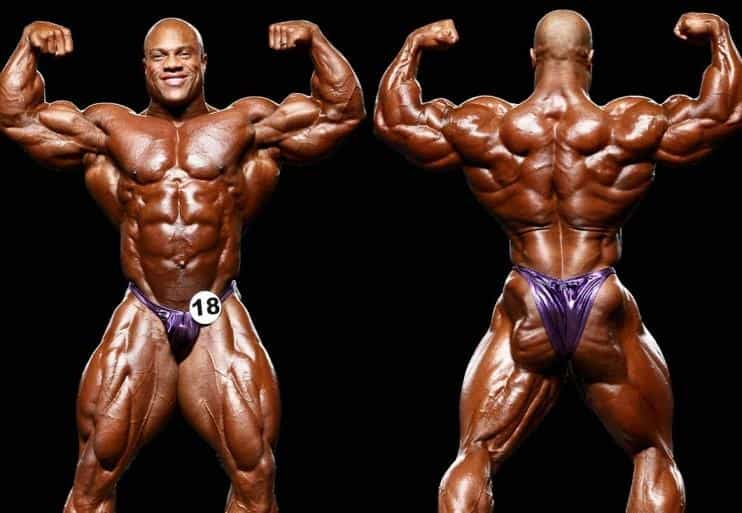
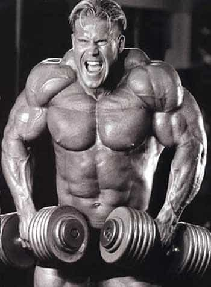
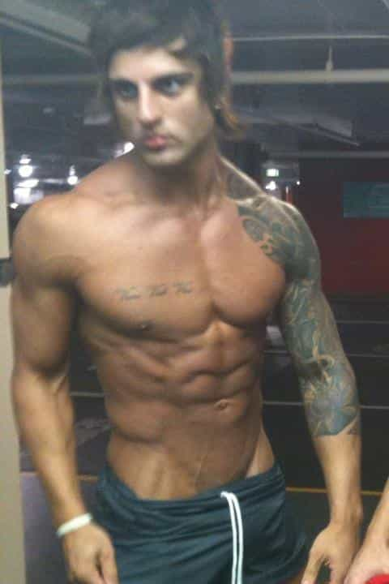

Everybody knows the old farts like Arnold Schwarzenegger and Ronnie Coleman were legendary body builders, but their success is too far removed from the present to inspire today’s young men. Instead, here are the seven greatest for our generation…
Russian bodybuilder Alexey Lesukov is easily one of the biggest 23 year old’s on Earth. No sane man would want to get on the wrong side of this Russian bear.

Youtube sensation Frank Yang has been making waves among young people for his humor filled videos. He is an inspiration to bookish young Asian men in particular to shred away their skinniness. While he looks lean in his photos, check out any of his videos and you’ll see why he is the most prominent young Asian body builder today.

Although relatively obscure, Lee Priest is a 40 year old Australian bodybuilder, best known for doing the bodywork for The Hulk movie, on top of being a champion race car driver and now actor. He won the IFBB (International Federation of Bodybuilders) Mr. Australia competitions when he was 17, 18 and 19.

37-year-old Brooklyn native Kai Greene rose out of childhood poverty and foster homes to become the runner up in the Mr. Olympia competition in 2012 and winner of the 2011 New York Pro, a rare rags-to-riches bodybuilding tale.

33-year-old two times Mr. Olympia Phil Heath is in a word: legendary. Every aspiring body builder today has seen the picture of him below and thought to himself “I did not know getting that big was even possible” and then asked “Do I even want to get that big?”

Onto the big leagues, 39-year-old Jay Cutler is an inspiration to young men not just because of his size, but because he has won the Mr. Olympia competition four times, and was runner up in 2011. He is only the third Mr. Olympia to win the title in non-consecutive years, joining the ranks of Arnold Schwarzenegger and Franco Columbu.

The Son of Zeus’s death spearheaded a bodybuilding revolution among young people, and has put more young men in the gym than any other body-builder this century. As such, one cannot deny that he is the greatest and most influential body builder of our generation.

Don’t Miss: Is Zyzz A Role Model Or A Bad Influence?